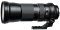

器材库 > 35mm画幅AF变焦镜头 > SP 150-600/5-6.3 Di VC USD(A011)

详细规格
镜头类型
超远摄变焦镜头
发布日期
2013-12-13
焦距
150mm-600mm
最大光圈
f/5-6.3
最小光圈
f/32-40
视角（对角）
16°25 - 4°8（全画幅）
镜头结构
20片/13组
低/超低色散镜片
3片
光圈叶片
9片
最近对焦距离
270cm
最大放大倍率
0.2倍
驱动马达
USD（超声波马达）
滤镜口径
95mm
镜头卡口
Canon EF, Minolta/Konica-Minolta/Sony AF, Nikon F
防抖
是
颜色
黑色
尺寸
105.6×257.8mm
重量
（包括可拆卸的脚架接环）1951g
附件
镜头遮光罩，可拆卸脚架接环
备注
由于索尼数码单反相机内置防抖功能,因此索尼卡口镜头无VC防抖机构
MM72015-08-05 07:344.92 分
操作性 4.50耐用性 5.00性价比 5.00解像力 5.00色彩还原 5.00机械结构 5.00
秋色南山2014-12-08 20:493.83 分
操作性 4.00耐用性 4.00性价比 3.50解像力 3.50色彩还原 4.00机械结构 4.00
草雉京2014-09-09 09:324.75 分
操作性 5.00耐用性 4.50性价比 5.00解像力 4.50色彩还原 4.50机械结构 5.00
detlevs2014-07-17 10:524.75 分
操作性 5.00耐用性 5.00性价比 5.00解像力 4.50色彩还原 4.50机械结构 4.50
jiaozhibov2014-05-03 11:364.08 分
操作性 4.00耐用性 4.00性价比 5.00解像力 4.00色彩还原 4.00机械结构 3.50
jjww_19732014-04-17 01:032.83 分
操作性 3.00耐用性 3.00性价比 2.50解像力 2.50色彩还原 3.00机械结构 3.00
szg692014-03-14 14:184.75 分
操作性 5.00耐用性 4.50性价比 5.00解像力 4.50色彩还原 4.50机械结构 5.00
哈斯2014-03-07 00:304.08 分
操作性 4.00耐用性 3.50性价比 5.00解像力 3.50色彩还原 4.50机械结构 4.00
产品图 / 样片
SP 150-600/5-6.3 Di VC USD
评测 / 相关文章
- 详细内容 （存档）
- 腾龙SP150-600/5-6.3 Di VC USD测评 （存档）
- ［资讯］腾龙宣布开发150-600mm超望远变焦镜头 （存档）
- ［资讯］腾龙公布150-600/5-6.3镜头专利 （存档）
相关文章
- ［资讯］腾龙SP 150-600/5-6.3镜头除霉 （原站已下线）
- ［行情］腾龙150-600镜头特价 仅不到6千 （原站已下线）
- ［行情］腾龙150-600平民长焦特价 （原站已下线）
- ［试用］腾龙150-600打鸟的不二之选 （原站已下线）
- ［试用］腾龙SP150-600/5-6.3 Di VC USD测评 （存档）
- ［资讯］划时代的150-600mm超望远变焦镜头上市 （存档）
- ［资讯］腾龙宣布开发150-600mm超望远变焦镜头 （存档）
- ［资讯］腾龙公布150-600/5-6.3镜头专利 （存档）